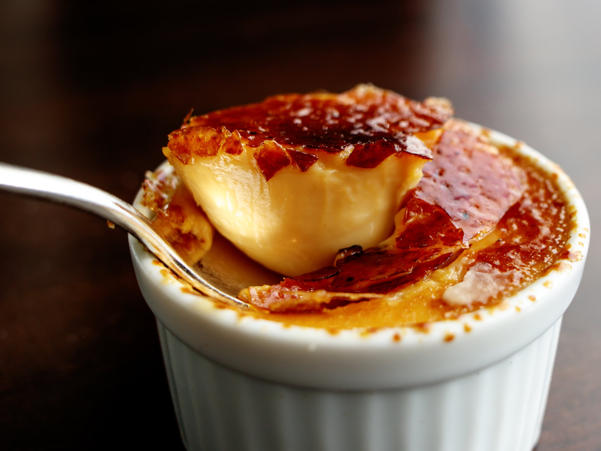

Homepage
Crème Brûlée

Description
One of my favourite desserts. The rich and creamy texture is unworldy!
Ingredients
- 1 cup heavy cream
- 3 tablespoons white sugar
- 3 large egg yolks
- 1/4 teaspoon vanilla extract
- 2 tablespoons white sugar, separated
Steps
- Preheat the oven to 175 degrees Celsius
- Whisk together cream and 3 tablespoons sugar in a microwave-safe bowl until combined
- Cook in the microwave for 1 to 2 minutes, until warm
- Take cream mixture out and whisk again to dissolve sugar. Whisk in egg yolks and vanilla until smooth.
- Pour cream mixture into 2 bowls set in a roasting pan
- Pour enough hot water into the pan to reach halfway up the sides of the bowls
- Bake for ~50 min until custard is set but slightly jiggly in the center when shaken
- Remove bowls from hot water and chill in the refrigerator until cold, at least 2 hours
- Sprinkle 1 tablespoon sugar evenly over the top of each dessert
- Use a kitchen torch to melt and lightly toast sugar topping until brown and bubbly